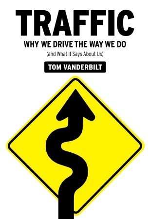
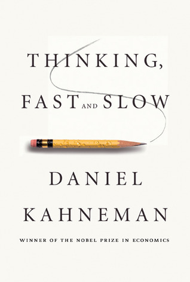

N.1 Mytho5

by Timothy Thomas Powers
Brendan Doyle, a specialist in the work of the early-nineteenth century poet William Ashbless, reluctantly accepts an invitation from a millionaire to act as a guide to time-travelling tourists. But while attending a lecture given by Samuel Taylor Coleridge in 1810, he becomes marooned in Regency London, where dark and dangerous forces know about the gates in time.
Caught up in the intrigue between rival bands of beggars, pursued by Egyptian sorcerers, and befriended by Coleridge, Doyle somehow survives and learns more about the mysterious Ashbless than he could ever have imagined possible...
It's price is 1005 705
N.2 Norse

by Tom Vanderbilt
talks about Why We Drive the Way We Do and What It Says About Us
It's price is 1505 1005
N.3 The Power of Myth

by Daniel Kahneman
talks about Thinking, Fast and Slow
It's price is 1705 1505